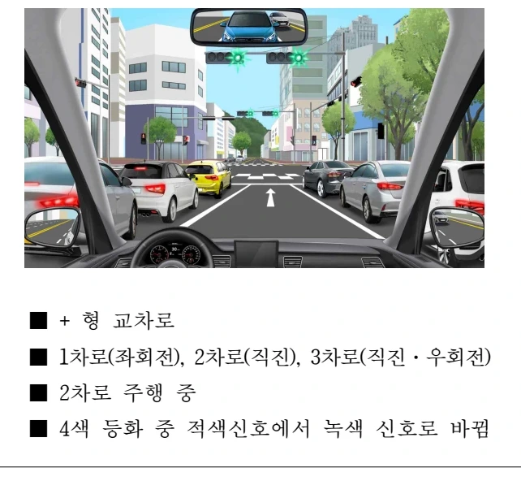

784. 如下图所示，下列选项中的哪两项是最安全的驾驶方法？

- ①由于是绿灯，所以加速快速直行通过交叉路口。
- ②打开危险报警闪光灯告知周围车辆，并从第二车道右转。
- ③行驶时防范突然从前面第三车道变道至左侧的车辆。
- ④由于后车跟得太近，因此为保持安全距离，加速快速通过交叉路口。
- ⑤亲眼确认交叉路口周围的情况，并慢慢加速通过。
查看答案
答案
③ 行驶时防范突然从前面第三车道变道至左侧的车辆。
⑤ 亲眼确认交叉路口周围的情况，并慢慢加速通过。
依据
可能有车辆直行行驶时突然从第一车道或第三车道前方变道至第二车道，且由于车辆停在第一车道或第三车道，难以查看路口左侧或右侧的路况，难以发现违章行驶的车辆。因此，养成慢速驾驶的习惯，并在信号变化后立即用眼睛检查路口情况再通过。另外，如果要右转，最安全的驾驶方式是在右转车道右转。您不得在白实线上改变航向。
依据文字为学习用机器翻译。